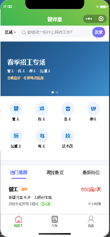
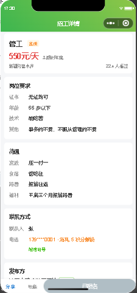
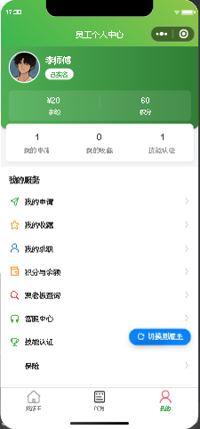
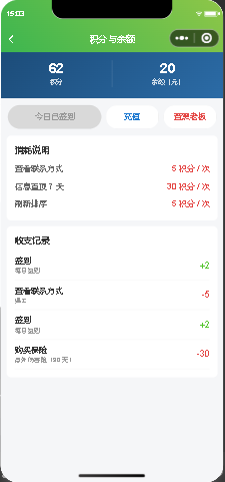
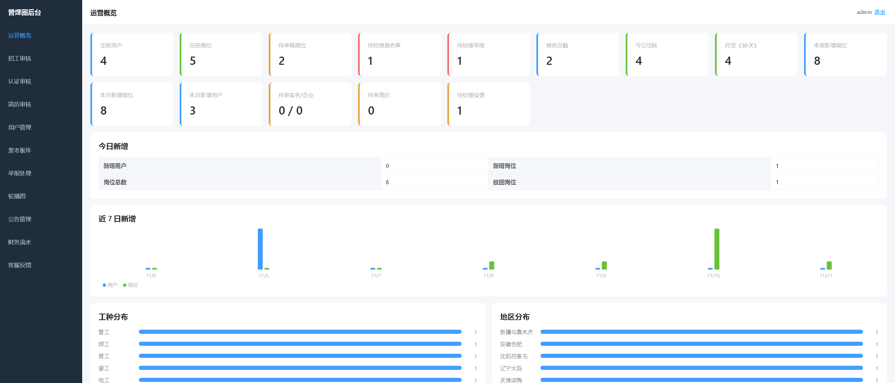
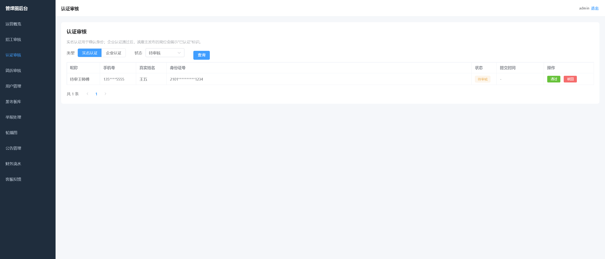
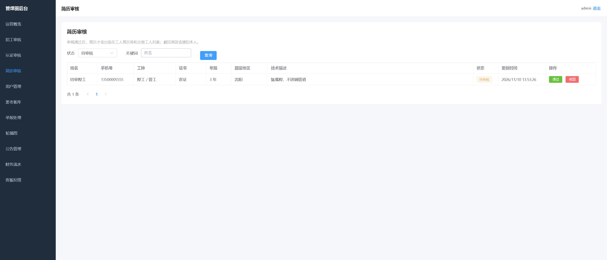
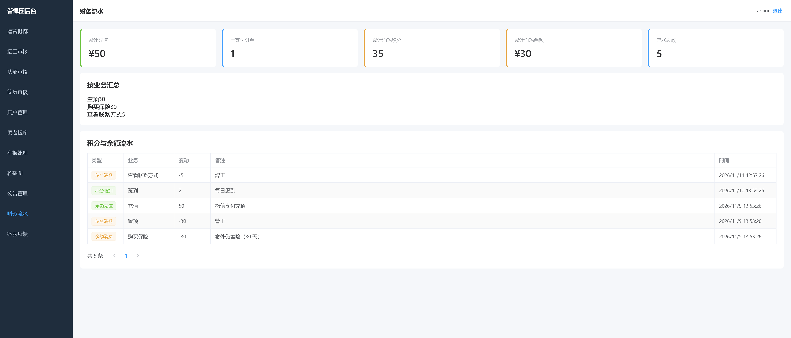

管焊圈小程序 · 闭环变更报告
2026-11-11 · 一期 PDF 3.x 代码闭环完成；二期 B1–B10 状态见 docs/交付验收与缺口总表.md 第十二章
1. 为什么做这次变更
上一版文档声称“已落地”的功能中，有 4 个阻断级断点：招工方入口依赖从未写入的 token、首页卡片字段丢失、5 个页面没有导航栏、“我的申请”字段错配。另有实名/企业认证无审核、有效期/置顶不执行、支付只有后端。本轮把这些全部打通，并用测试、构建、模拟器 E2E 与后台浏览器验收结案。
2. 关键决策
- 单一登录态：删除从未写入的 token 判断，统一为
ghq_user+userType；个人中心与雇主中心都提供原生切换菜单。 - 懒过期：不引入定时任务，读取岗位前把过期状态置 3、到期置顶写回 false；部署少一个组件，展示仍然正确。
- 认证审核独立状态：
realNameStatus / enterpriseStatus与求职开关分开；简历新增reviewStatus，避免复用一个字段。 - 简历电话加密：与岗位电话一致，AES-256-GCM；列表脱敏，雇主详情按用户
showPhone展示。 - 支付幂等：订单状态条件更新
pending → paid成功后才加余额，重复回调不重复入账。 - 发布即置顶：发布页勾选“审核后置顶”，审核通过时由后台按当前积分配置扣分并置顶，失败会通知。
3. 实际修复
| 问题 | 修复 | 证据 |
|---|---|---|
| 招工方入口不可达 | 统一登录态；个人中心/雇主中心原生切换菜单；雇主资料接口加载 | E2E 切换到雇主中心 pages/employer/index |
| 首页卡片字段丢失 | 保留接口原始字段，补 distance；查看更多改搜索 tab | 截图 closure-01-index.png |
| 5 页无导航栏 | 新建并全局注册 nav-bar（基于 cu-custom） | app.json 全局组件；截图 closure-06-mine.png |
| 我的申请空白 | 后端关联岗位返回薪资/地区/雇主；前端读扁平字段 | E2E 我的申请岗位名非空 |
| 实名/企业认证无审核 | 后台认证审核页 + 通知 + 驳回原因；通过后岗位带认证标识 | 用例 [13] + 后台截图 |
| 有效期/置顶不执行 | 读取前懒过期；到期置顶写回 false；发布可选 7/15/30 天 | 用例 [11] |
| 岗位管理假操作 | 暂停/恢复/删除/置顶/刷新/编辑全部走接口 | 用例 [11] |
| 充值只有提示 | 金额选择 + uni.requestPayment + 回调幂等 | 用例 [16] |
| 简历电话明文 | contactPhoneEnc 加密；列表脱敏；showPhone 控制 | 用例 [14] |
| 消息无公告 | 公告 CRUD + 小程序展示 | 用例 [15] + 后台浏览器实测 |
| 后台统计/财务不足 | 月活、周/月岗位、待审认证/简历；积分/余额拆分、按业务汇总 | 后台截图 overview.png、finance.png |
| 黑老板查询免费 | 后台可配置查询扣分（默认 0） | 用例 [17] |
4. 验证证据
cd cloudfunctions/api && node test/run.js 结果: 124 通过, 0 失败 cd app && npm run build:mp-weixin DONE Build complete. 33 页，app.wxss 123,816 字节 生产产物 localhost:3001 引用: 0 cd admin && npm run build ✓ built in 5.20s cd e2e && node ui.cjs → 16 通过, 0 失败 cd e2e && node closure.cjs → 17 通过, 0 失败
小程序截图




后台截图




5. 独立审查修复（1 轮）
独立只读审查对提交 b2ae805 给出 Request Changes。以下问题已修复并复验：
| 发现 | 修复 |
|---|---|
| 消息/公告页无入口 | 个人中心新增“消息通知”菜单 |
| 跨岗位录用/拒绝/取消越权 | 校验 application.jobId 与路由 jobId 一致 |
| 删除与暂停同状态，可绕过审核恢复 | 删除改 status 5；我的招聘排除；后台显示已删除 |
| 过期岗位仍可置顶/刷新扣分 | 操作前懒过期，状态非 1 拒绝 |
| 企业执照/举报证据 fileID 打不开 | 后台 getTempFileURL 转临时 URL |
| 简历详情字段错配 | 映射 name/年限/证书，移除假字段 |
| 发布岗位不落招工方身份 | 发布成功写 userType=employer；脱敏号禁止拨号 |
| 编辑不续期、清空已付费置顶 | 重算 expireAt；保留 topExpireAt |
| 支付回调先置 paid 后入账 | 订单/余额/流水同一事务 |
| 简历列表 200 条截断 | 数据库 reviewStatus=1 分页 |
| 工种分布按标题分组 | 按 categoryId 映射分类名 |
复验：124 用例 0 失败；小程序 16+19 E2E 全过；后台构建通过。
6. 风险与回滚
| 项 | 级别 | 说明 |
|---|---|---|
| 真实支付 / 真机绑手机 / 云部署 | 高 | 需商户号、已认证 AppID、云环境；代码与本地用例已过 |
| 报名并发重复插入 | 中 | 先查后插；生产建议加唯一约束或事务。单用户重复已拦截 |
| 管理端限流 | 中 | 进程内 5 次失败锁 5 分钟；多实例需网关/数据库限流 |
| 区县筛选 / 短信登录 / 轮播上传 | 低 | 明确产品取舍，已在交付报告记录 |
回滚：所有修改在 git diff 中逐文件可回滚；旧文档通过 git rm 删除，可从 HEAD 恢复；构建产物为 gitignored，可重新生成。
7. 自测题
1. 为什么删除 token 判断，而不是补写 token？
登录身份来自微信云函数上下文 OPENID，前端没有独立的账号密码会话；token 是历史残留。统一 ghq_user 避免两套状态不一致。
2. 过期岗位为什么不用定时任务也正确？
列表/详情/附近/最新/分类在读取前执行 sweepExpired，把 expireAt 到期的岗位置 3、到期置顶写回 false；展示口径始终正确。定时任务只是可选的清理手段。
3. 支付回调两次为什么只加一次余额？
orders.status 从 pending 到 paid 使用条件更新；只有 stats.updated === 1 的请求继续加余额，第二个请求返回 already paid。
4. 简历审核为什么要新增 reviewStatus，不复用 status？
status 已表示求职开关（开启/关闭）。复用会让“关闭求职”和“审核驳回”混在一起，无法区分。
5. 招工方入口的验收路径是什么？
清缓存 → 我的 → 切换到招工方 → 雇主中心 → 发布职位 → 提交 → 后台招工审核出现待审记录。E2E closure 已断言切换到 pages/employer/index。
通过标准：能答出 4/5 以上；答案不是背结论，而是能指出对应代码或验证命令。
完整逐项矩阵、部署步骤、数据模型与剩余风险见 docs/交付验收与缺口总表.md。